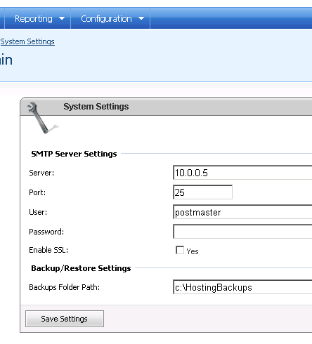

Tuning SMTP relay for sending summary letters in WSP HES environment
Translations:
WSP uses SMTP relay mechanism to send summary letter. So the main Idea to avoid errors in this process is:
- Set WSP to use right SMTP Server.
- Allow SMTP relay from WSP Enterprise Server computer on that SMTP server.
Here is steps to achieve it.
1. Decide what SMTP server will relay messages from WSP.
If you have some non-Exchange 2007 SMTP server you can use it for relay. If you decide use non-Exchange 2007 SMTP server for relay - follow documentation for that server to allow SMTP relay from designated IP address.
This article describes how to allow SMTP relay from WSP Enterprise Server computer IP address on Exchange 2007 transport server.
It was tested only on HUB transport server in our lab, but should work with Edge transport server too. However we recommend do it on Hub transport server in your environment even if you have Edge transport in place. The main reason for this is security - HUB transport servers are usually more hidden from outside and can communicate with WSP ES server with internal network.
2. Set SMTP relay server in WSP.
Go to Configuration > System settings and set IP address of transport server you decide to use. We recommend use Internal IP address of transport server if your transport server has both External/Internet and Internal/Local NICs.

3. Ensure you know what IP address WSP Enterprise Server will connect to transport server from. Depending on complexity of your network infrastructure it may vary. To ensure in what IP address WSP ES uses to connect to transport server you can do the following:
a. Increase logging level for MSExchangeTransport\SmtpReceive
Set-EventLogLevel -Identity MSExchangeTransport\SmtpReceive -level medium
b. Try to send summary letter
c. Review error in transport server Application log. It may looks like this:
Inbound authentication failed with error LogonDenied for Receive connector Default EXCH01. The authentication mechanism is Gssapi. The source IP address of the client who tried to authenticate to Microsoft Exchange is [10.0.0.4].
d. Write down IP address WSP ES connects to transport server (10.0.0.4 in our example)
4. Allow Anonymous Relay from WSP ES to transport server according to http://technet.microsoft.com/en-us/library/bb232021.aspx, "To use the Exchange Management Console to create a new Receive connector that grants the relay permission to anonymous connections" subsection. This article is pretty clear, just some notes:
a. Use meaningful name for the connector, for example Relay from WSP (sending summary letters)
b. In Local network settings page type the IP address the same as you typed in WSP settings (10.0.0.5 in our example).
c. In Remote Network settings page type the IP address if WSP Enterprise Server (10.0.0.4 in our example)
5. Test sending summary letter.
6. Set logging level for MSExchangeTransport\SmtpReceive to default level.
Set-EventLogLevel -Identity MSExchangeTransport\SmtpReceive -level lowest